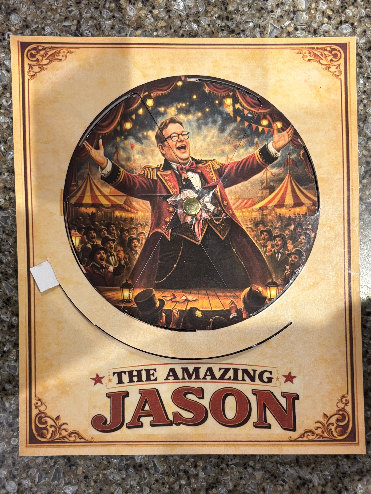
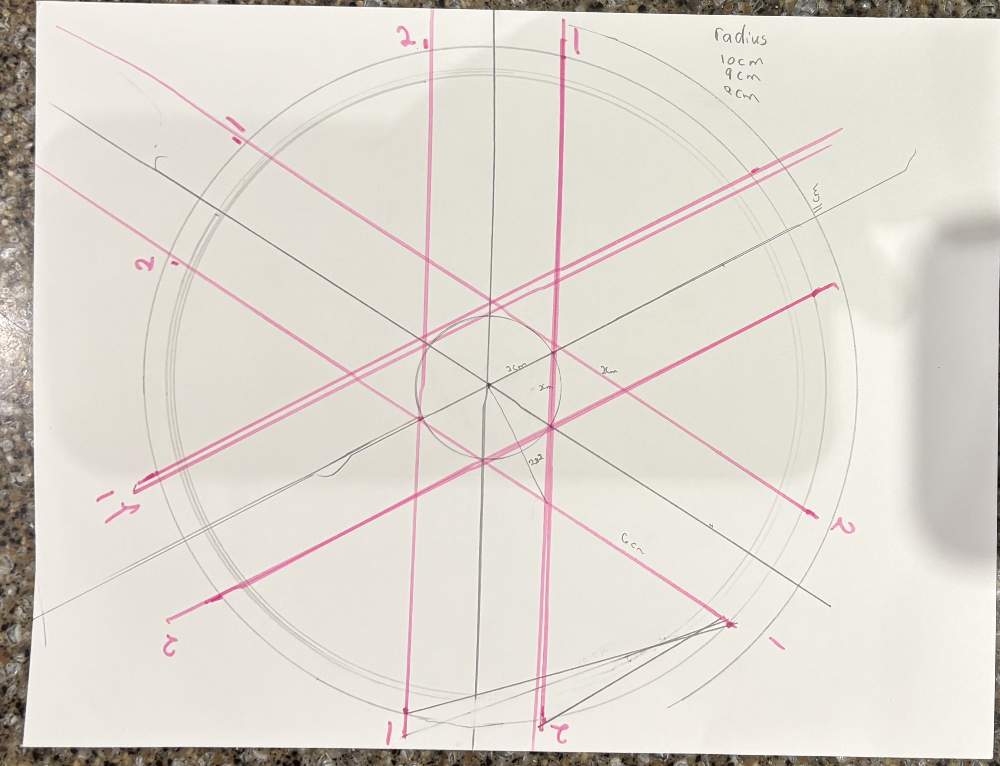

I made a personalized volvelle for a friend named Jason. On the front: Jason as a circus ringmaster, arms thrown wide, basking in applause. Rotate the inner wheel and the image transforms — the same figure, now clutching an enormous, absurd bouquet. Same frame. Different story. That's the trick.
A volvelle (also called a wheel chart or turning wheel) is a paper mechanism where two circular pieces rotate against each other, revealing different images through cutouts as you spin. They've been around since the Middle Ages — used for astronomy, calendars, and ciphers. The Victorian era added a more playful version: picture wheels in children's books, where turning a disc would swap one scene for another.
Where This Came From


It started with a YouTube video showing pages from a Victorian picture book — the disc spins and the illustration changes completely. I tracked it down: the book was made by Ernest Nister around 1895. The effect is genuinely magical even knowing exactly how it works.
I wanted to make one, but couldn't find templates that captured the precise geometry. So I worked it out myself.
Working Out the Geometry

The key insight is that each piece — front and back — has a ring of image visible through cutout sections, and a set of spokes in the center that hold everything together and hide the seams. The back piece is a mirror of the front's spoke pattern, offset so the spokes interleave as it rotates. Getting those angles right required actual paper-and-pencil geometry before I touched any software.
Final Measurements
- Image ring: 15 cm diameter — six 35–36° cutout windows
- Inner circle (spoke anchor): 1.6 cm diameter
- Center pin dot: 0.25 cm
- Front frame: 19 × 21 cm rectangle
- Slider arc: 110° cut along an 18 cm circle
- Back outer ring: 18 cm diameter
When I got stuck on what the center looked like, Extreme Cards and Papercrafting had a rough template that helped me understand the overall structure — even though I ended up reworking the geometry from scratch. I started in Inkscape and finished in Affinity Designer, which I found much easier to learn.
The Templates
The SVG files below are the cut templates I designed. The front piece has the image ring cutout, the spoke pattern, and the frame outline. The back piece has the full rotating disc with its own spoke pattern. Blue dashed lines are guides (image and slider circles); black lines are cuts and folds.
To use the templates: print at 100% scale (no scaling to fit), cut along the black lines, pin through the center dot with a brad or eyelet, and layer your artwork behind each piece before assembly. The cutout windows on both pieces need to align with your image art — the front windows show one set of image segments; the back windows show the alternating set.
SVG files — open in Inkscape, Affinity Designer, or any vector editor. Print at actual size.
{kind=link}
{kind=link}
How It Works
The wheel is split into six pie-shaped sections, each offset between front and back. As you rotate, the back sections slide under the front frame — one set of image windows closes as the other opens.
Both pieces share the same spoke pattern, but the back is a mirror image, rotated so the spokes interleave instead of overlapping. That's what makes the transition clean: you never see both images at once, only the gradual reveal. The 110° slider cut on the front constrains the rotation so the wheel stops at each complete image.
For the art itself: I generated the circus images with AI, then composited them so the ringmaster's pose would read well in both states — triumphant arms-out in one rotation, bouquet-clutching absurdity in the other. Getting the circular crop right so that the image reads well through the 35° cutout windows took a few test prints.